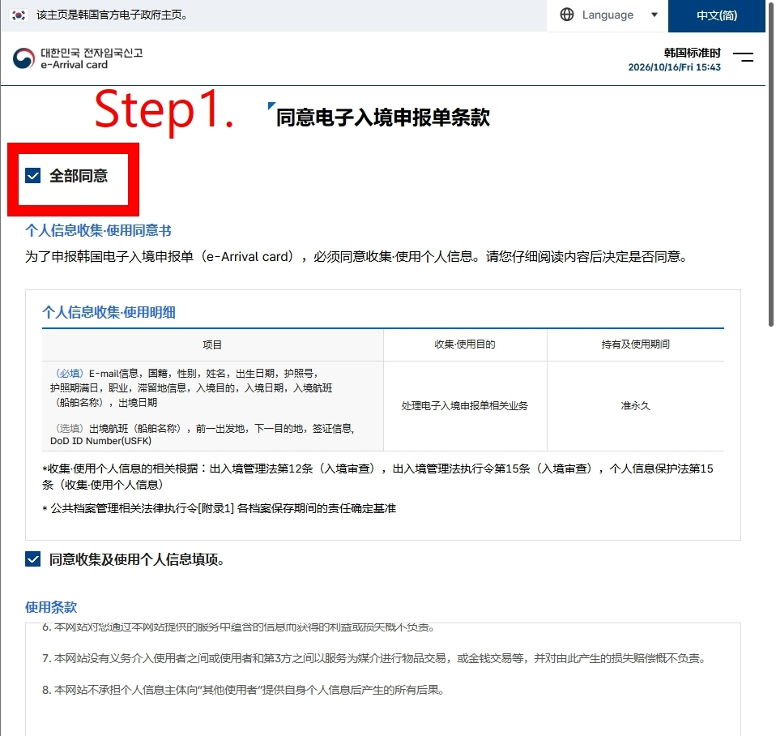
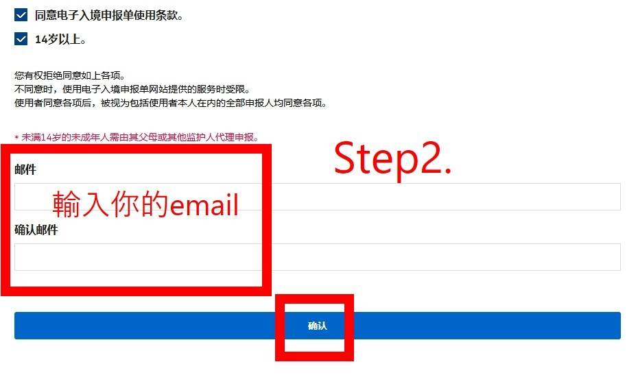
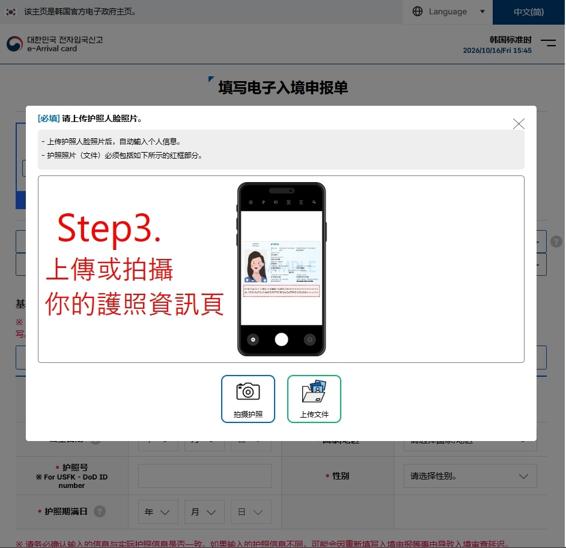
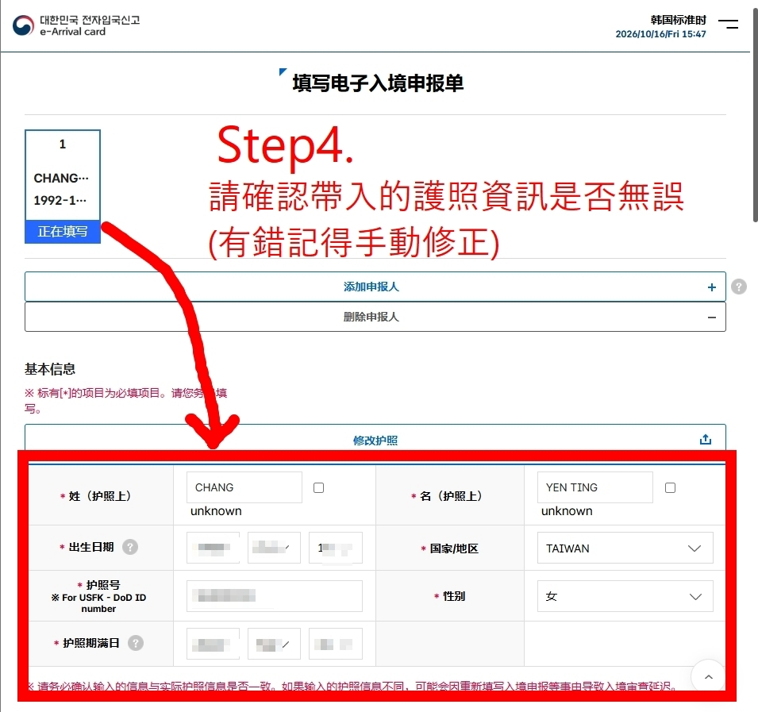
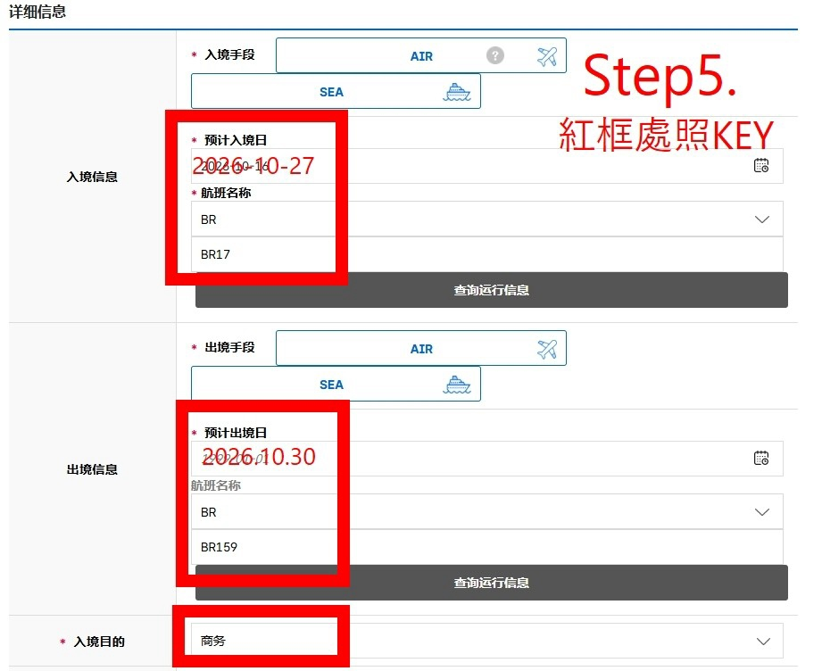
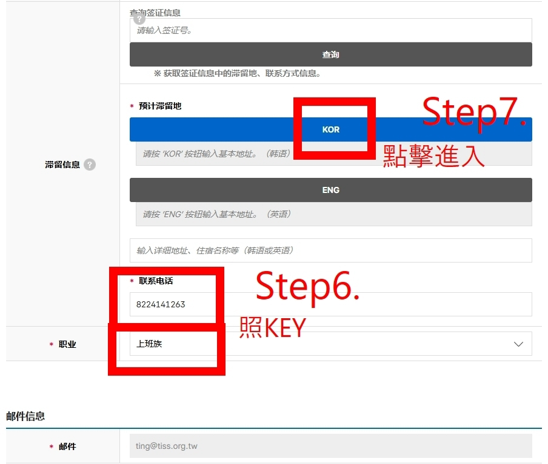
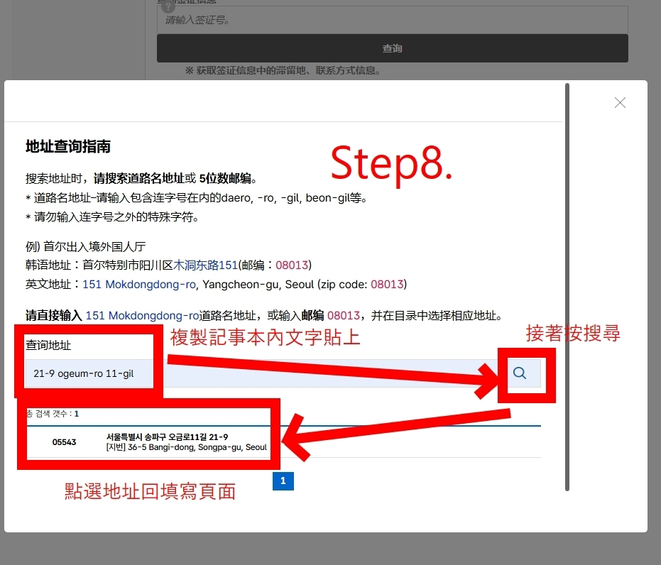
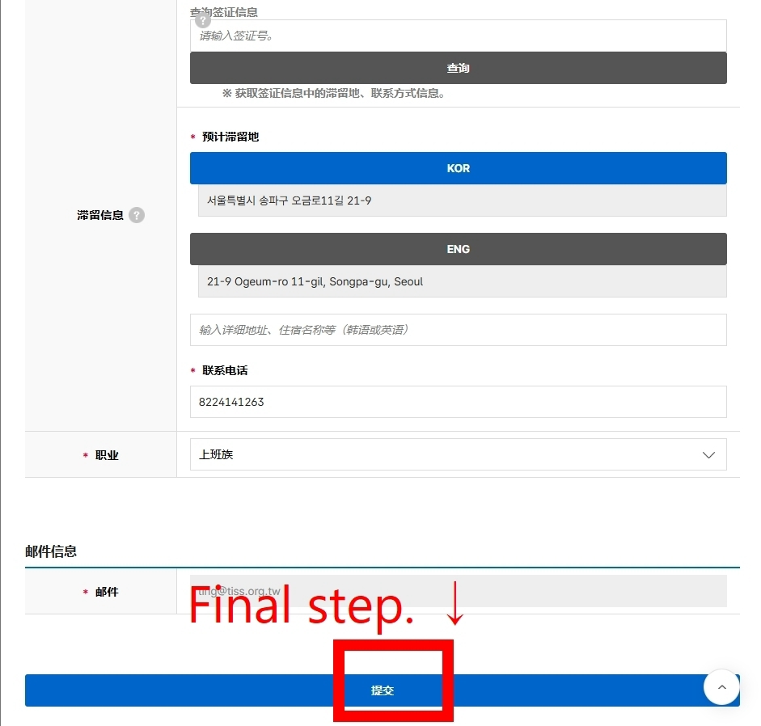

115 年韓國參訪行程規劃
走進首爾，
看見運動數據的下一步。
從大學研究、數據平台到職業球隊應用，四天走訪韓國運動科學與數據分析現場。
01 / ITINERARY
行前資訊與四日行程
先查看注意事項、入境申請教學、飯店與交通資訊，再點選日期瀏覽當日安排。
04 DAYS
IN SEOUL
IN SEOUL
BEFORE DEPARTURE
行前事項
出發前確認以下六項準備工作。
桃園國際機場第二航廈（T2）停車場預約
前往停車場預約頁首爾當地費用
翻譯人員相關費用（簽領據）
- 交通費6,000 元
- 住宿費（3 晚）15,000 元
- 翻譯費15,000 元
日支費
約 9,280 元攜帶相關伴手禮
E-ARRIVAL CARD / GUIDE
前往官方申請頁 韓國入境申請教學
請於出發前 72 小時內完成韓國電子入境申報。
填寫重點
依下列資訊填寫
- 申請時間
- 出發前 72 小時
- 入境訊息
- 2026.10.27・BR17
- 出境訊息
- 2026.10.30・BR159
- 入境目的
- 商務
- 預計滯留地
- 21-9 Ogeum-ro 11-gil
- 聯繫電話
- 8224141263
- 職業
- 上班族
STEP BY STEP
圖解操作步驟
依序閱讀以下畫面與標註，完成申請後再送出資料。








STAY IN SEOUL
蠶室快樂飯店
Jamsil Delight Hotel・잠실 딜라이트호텔・首爾松坡區的現代化精品飯店。
DELIGHT HOTEL JAMSIL
基本資訊與位置
- 英文地址
- 21-9 Ogeum-ro 11-gil, Bangi-dong, Songpa District, Seoul, South Korea
- 韓文地址
- 서울특별시 송파구 오금로11길 21-9
- 飯店電話
- +82-2-414-1263
- 本次入住
- 10/27（二）
- 本次退房
- 10/30（五）
- 開幕年份
- 2017 年
- 客房數
- 71 間特色裝修客房
- 入住／退房
- 15:00 後入住／12:00 前退房
交通與周邊
- 距地鐵 8 號線夢村土城站約 310–400 公尺。
- 距松潘aru站約 620 公尺。
- 步行約 8–10 分鐘可達蠶室站；約 800 公尺可達樂天世界塔與樂天世界購物中心。
- 鄰近芳荑洞美食街、石村湖與奧林匹克公園。
主要設施與服務
- 客房提供免費 Wi-Fi、平面電視、影音串流、冰箱與空調；部分房型設有按摩浴缸或地熱設備。
- 館內設有 CAFE BOLZAN、酒吧／酒廊，以及 10 樓自助洗衣與烘衣設備。
- 提供 24 小時櫃台、商務中心、免費代客停車與免費自行車租借。
GETTING AROUND SEOUL
首爾 Uber 叫車事項
可直接使用台灣慣用的 Uber App，無須重新註冊或另行下載韓國門號。
UBER IN SEOUL
使用前先確認
App 介面會自動切換為繁體中文，並與韓國當地的 UT／Uber 合作系統連結。請於出發前完成付款設定，抵達後即可直接叫車。
出發前設定
請先在台灣完成 App 內信用卡或金融卡的綁定與 4 位數 PIN 碼設定，避免到韓國因收不到簡訊驗證碼而無法綁卡。
使用方式
開啟 App 輸入目的地，支援中文或英文；選擇車型、確認預估車資後即可呼叫。車資會透過綁定的信用卡自動扣款，下車不用付現金。
主要車型
提供 Uber Taxi（一般計程車）、快速叫車、Uber Green 以及豪華或大型車等選項。
行李與人數限制
一般計程車多為 4 人座，含司機共 5 人；部分車輛為瓦斯車，後方置物空間有限。若同行超過 4 人或行李較多，建議分開叫車或預約大型車。
參考連結
DAY 01 / TUESDAY
10 / 27啟程，前往首爾
從臺北桃園出發，上午抵達韓國仁川。
04:45 — 05:00
集合
桃園機場第二航廈長榮櫃檯前集合
請於集合時段內完成報到與行李整理，準備辦理出境手續。
07:05 — 10:30
航班 · BR170
臺北桃園國際機場 → 韓國仁川機場
長榮航空 Eva Airways；附件所列飛行時間為 2 小時 25 分。
早餐：機上簡餐抵達後
機場接送包機資訊
機場舉牌接機（10 人座）
司機舉牌「welcome TISS」。
訂單編號：#26KK259504307DAY 02 / WEDNESDAY
10 / 28數據科學與運動 AI 交流
下午至晚間走訪兩所大學，交流數據科學、體育分析及人工智慧研究。
14:30 — 15:30
學術參訪
梨花女子大學數據科學研究院
以數據科學與人工智慧為核心的研究與教育機構，結合統計分析、AI、資料建模等技術，培養數據科學人才並推動跨領域應用；設有健康數據科學、Data & AI Applications 等研究團隊，可應用於健康、運動及其他產業領域。
Ewha Womans UniversityGraduate School of Data Science（待接待窗口確認）
- 地址
- 52 Ewhayeodae-gil, Seodaemun-gu, Seoul
서울특별시 서대문구 이화여대길 52 - 集合地點
- Ewha Campus Complex（ECC）B137
- 聯絡窗口
- Ms. 남 정 현 Nam, Jung-hyun
+82-2-3277-2314
16:30 — 18:30
學術參訪
韓國體育大學運動分析中心
將人工智慧與數據分析應用於體育領域的研究中心，運用 AI 與大數據進行運動表現、比賽及體育相關資料分析，結合韓國體育大學的運動專業研究資源，推動 AI 技術在體育分析及決策上的應用。
Korea National Sport UniversityCenter for Sports and Performance Analytics
한국체육대학교 스포츠분석센터
- 地址／集合
- 서울특별시 송파구 오륜동 88-15 한국체육대학교 필승관 305호
Pilseung Hall, Room 305（필승관 305호） - 聯絡人
- Dr. Yoo-Jin Seo
手機：+82-10-3943-8100
中心：+82-2-410-6931 - 交通提醒
- 梨花女子大學至韓國體育大學僅預留 1 小時，建議提前確認車程及上下車位置。
住宿：Jamsil Delight Hotel
DAY 03 / THURSDAY
10 / 29運動科學與國家體育場館
上午進行學術交流，下午參訪韓國重要體育文化場館。
10:00 — 12:00
學術參訪
首爾科技大學運動科學系
運動科學研究與實務應用為核心的學術單位，研究領域涵蓋運動生理、運動心理、運動傷害與復健、生物力學及穿戴式科技等，並結合體適能評估、動作分析與運動處方等實務應用，培養運動科學專業人才。
Seoul National University of Science and Technology（SeoulTech）Department of Sports Science
서울과학기술대학교 스포츠과학과
- 地點
- 서울과학기술대학교 무궁관
Mugung Hall, Building No. 57 - 教授研究室
- Mugung Hall 313
實際集合或會議室待確認 - 聯絡人
- Prof. Prabhat Pathak
手機：+82-10-4638-5491
辦公室：+82-2-970-6296
prabhat@seoultech.ac.kr
14:00 — 16:00
參訪行程
國家體育博物館
為首爾奧林匹克紀念館前身，於 2018 年進入整修，並於 2026 年 10 月 15 日重新開館營運。館內珍藏大量 1988 年漢城奧運歷史文物，並有沉浸式互動體驗空間，不僅展現韓國現代體育發展歷程，也增進各年齡層的參與樂趣。
National Sports Museum국립스포츠박물관
- 地址
- 05540 서울시 송파구 올림픽로 424
- 開放資訊
- 免費入場
09:30–17:30
一般電話：+82-2-410-1114 - 參觀提醒
- 20 人以上團體需提前預約；如需專人導覽，建議事先聯繫。
- 1988 漢城奧運歷史文物
- 韓國體育發展歷程
- 沉浸式互動展示
- 體育文化與科技應用
住宿：Jamsil Delight Hotel
DAY 04 / FRIDAY
10 / 30研究交流，返回臺灣
上午走訪漢陽大學，下午前往機場，晚間自仁川返臺。
10:00 — 12:00
學術參訪
漢陽大學運動創新與動態研究室
專注於運動科學與數據分析的跨領域融合。研究室透過穿戴式感測器、運動捕捉系統與 AI 數據建模，精準採集並分析運動員的體能數據與生物力學動態，進而優化運動表現、預測運動傷害並制定客製化訓練策略，以數據驅動體育創新的未來。
Hanyang UniversitySports Innovation & Dynamics Lab（SIDLAB）
- 地址
- 222 Wangsimni-ro, Seongdong-gu, Seoul, Republic of Korea
서울특별시 성동구 왕십리로 222 - 聯絡人
- Dr. Gagan Pradhan
手機：+82-10-2593-8470
contact@sidlab.tech
15:00
機場接送包機資訊
從飯店出發前往機場 T1
預計車程約 1.5–2 小時，銜接 19:45 起飛航班。
訂單編號：#26KK25950483719:45 — 21:40
航班 · BR159
韓國仁川機場 → 臺北桃園國際機場
長榮航空 Eva Airways；附件所列飛行時間為 2 小時 50 分。
晚餐：機上餐點